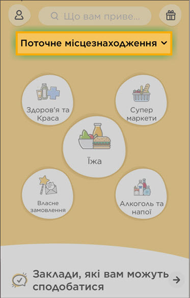
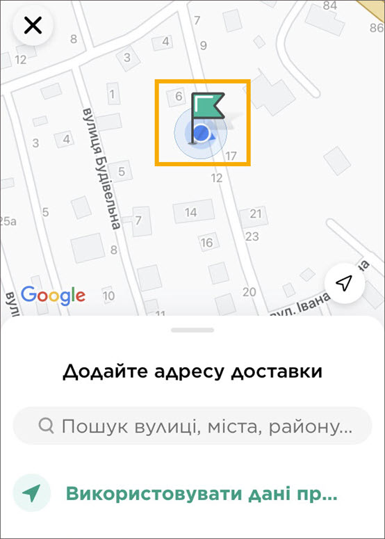
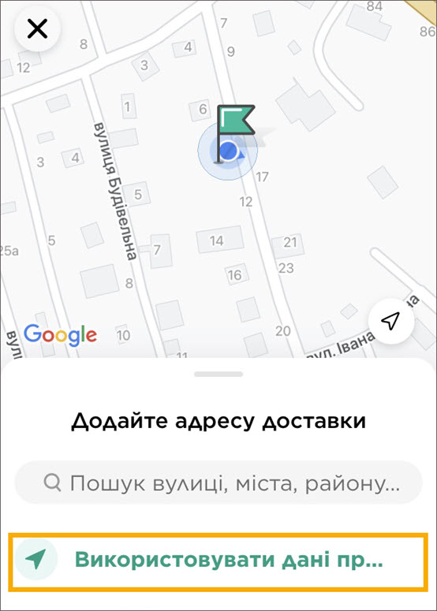
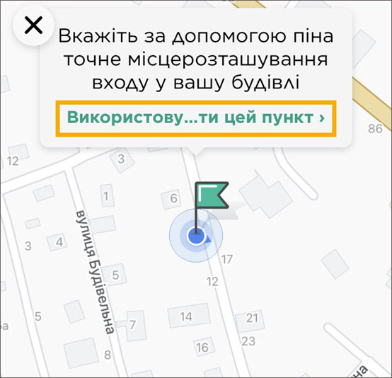
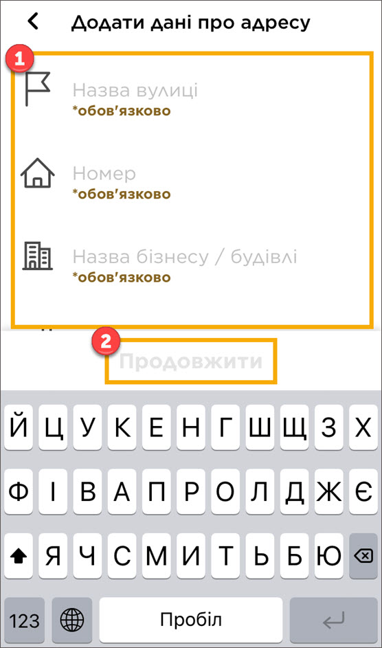
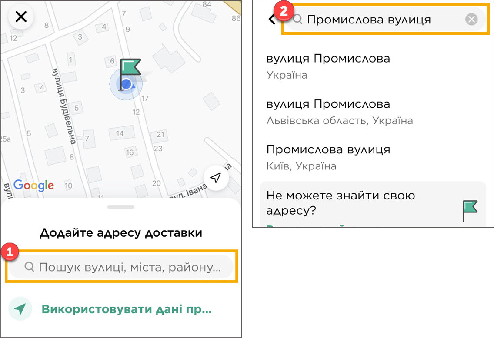
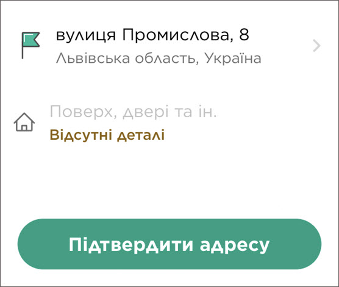

Додати адресу доставки
Порада.
-
Щоб закрити екран, торкніть
.
-
Щоб повернутись на попередній екран, торкніть
у
верхньому правому куті.
Щоб додати адресу доставки, виконайте наведені нижче дії:
-
У верхній частині головної екрану застосунку торкніть
Поточне місцезнаходження.

- Якшо ви хочете замовити доставку на свою адресу:
-
Перевірте, чи зелений прапорець правильно показує ваше
місцезнаходження. Якщо це не так, пересуньте прапорець у правильну
точку.

-
Торкніть Використовувати дані про поточне місцезнаходження.

- У полі над прапорцем торкніть Використовувати цей пункт.

-
Введіть необхідну інформацію і, якщо потрібно, спеціальні інструкції.
Якщо бізнес або будівля не мають окремої назви, введіть знак
“мінус”.Тоді торкніть Продовжити.

Щоб замовити доставку на іншу адресу:
-
Знайдіть потрібну адресу, або виберіть її з випадаючого списку. Якщо
буде запропоновано, введіть додаткову інформацію (наприклад, назву
вулиці або номер поверху).

- Торкніть Підтвердити адресу.

Порада.
-
Ви можете також скористатись полем пошуку, щоб замовити
доставку на свою адресу.